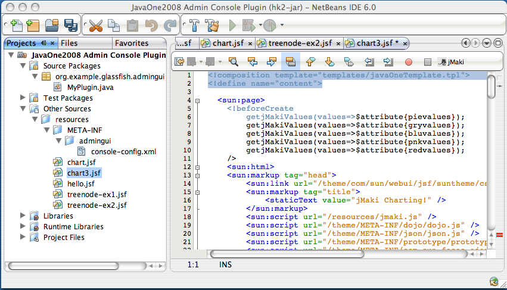
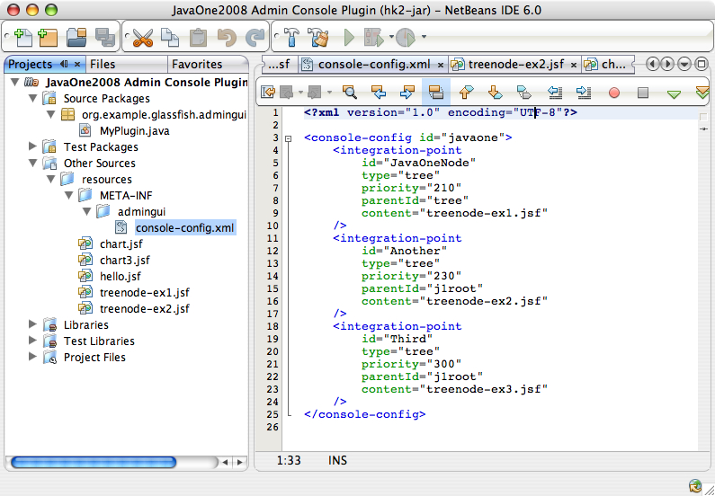
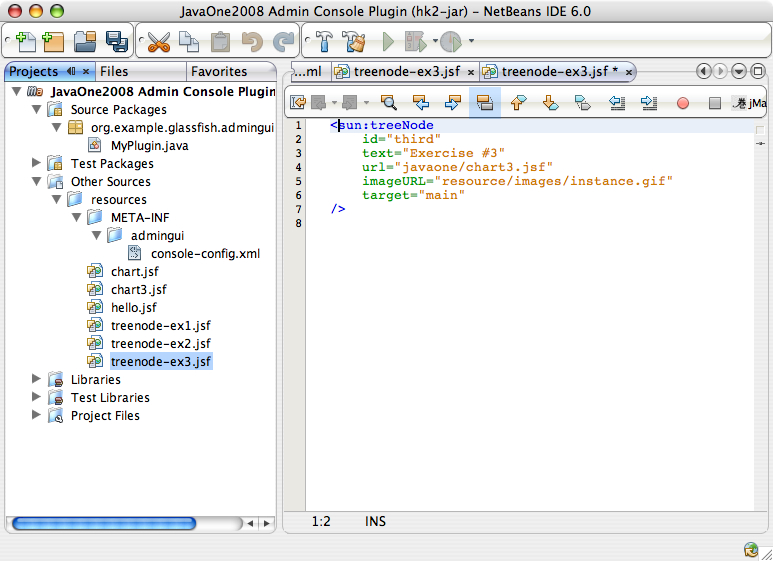

Exercise 3: Templating your Plugin
Introduction:
In this exercise you will incorporate the previous exercises. You will also use a template to help you create a new JavaServer Faces page. The template helps you to layout your page and allows you to focus on providing the content. At the completion of this lab your GlassFish v3 Aministration Console plugin will look like this:

In this exercise you will:
- Create a JSF page which utilizes a template and shows a jMaki chart.
- Add another tree node to the Administration Console via an IntegrationPoint.
- Access the GlassFish v3 Administration Console and see the jMaki Charts page with customized header.
To learn background information about using template in JavaServer Faces, proceed to the next section. To begin using a template to create a JavaServer Faces page immediately, proceed to the Step-by-Step Instructions.
Background Information:
JSFTemplating makes building pages and components easier. When creating pages, often content is repeated many times across multiple pages. Using templates you can easily reuse your code and make it much easier to maintain.
TBD: More info relating to Templating.mv gfplugin/myplugin gfplugin/myplugin.save mkdir gfplugin/myplugin cp -R gfplugin/solution/myplugin/ex2 gfplugin/myplugin
Step-by-Step Instructions:
Overview:
In this excercise, you will complete the following:
- Create a jMaki Charting Page within a Template.
You will create a JSFTemplating page that contains a jMaki Charting component within a template.
- Modify Your console-config.xml.
You will modify your
console-config.xmlconfiguration file to add a newIntegrationPoint. - Specify Your Tree Node layout.
In this step you will add the file "
treenode-ex3.jsf" to specify a new tree node to point to the new jMaki Charting page. - Build and Install Your GlassFish v3 Plugin.
In this step you will install and test your plugin.
Steps:
A. Create a jMaki Charting Page within a Template
You should have myplugin project still open in
NetBeans. If you have closed the project, follow these steps to open
it again.
- Open the plugin module in NetBeans
- Launch NetBeans IDE 6.0.
- Open plugin module.
- Choose Open Project from the File menu.
- Browse to gfplugin and select myplugin.
- Press the Open Project button.
 Figure 3-2: Open Project myplugin
Figure 3-2: Open Project myplugin
- Create a page showing a jMaki chart in a template.
In this step, you will create a JSF page based on a template, and add the jMaki Charting component to it. Notice the only change compared to "
chart.jsf" in exercise #2 is the use of templatejavaOneTemplate.tpl. The template defines parts of the page that are shared across multiple pages and allows our page to contain much less redundant code.<!composition template="templates/javaOneTemplate.tpl"> <!define name="content"> <sun:page> <!beforeCreate getjMakiValues(values=>$attribute{pievalues}); getjMakiValues(values=>$attribute{gryvalues}); getjMakiValues(values=>$attribute{bluvalues}); getjMakiValues(values=>$attribute{pnkvalues}); getjMakiValues(values=>$attribute{redvalues}); /> <sun:html> <sun:markup tag="head"> <sun:link url="/theme/com/sun/webui/jsf/suntheme/css/css_master.css" /> <sun:markup tag="title"> <staticText value="jMaki Charting!" /> </sun:markup> <sun:script url="/resources/jmaki.js" /> <sun:script url="/theme/META-INF/dojo/dojo.js" /> <sun:script url="/theme/META-INF/json/json.js" /> <sun:script url="/theme/META-INF/prototype/prototype.js" /> <sun:script url="/theme/META-INF/com_sun_faces_ajax.js" /> </sun:markup> <sun:markup tag="body"> <sun:form id="form"> <sun:markup tag="div" style="width:380px; height: 310px;"> <sun:dropDown labels={"jmaki.charting.yahoo.pie" "jmaki.charting.google.pie" "jmaki.charting.plotkit.pie"} value="#{requestScope.chart1}"> <!beforeCreate setAttribute(key="chart1", value="jmaki.charting.google.pie"); /> </sun:dropDown> <sun:button value=" Refresh " /> <jmaki:widget name="#{requestScope.chart1}" args="{colorScheme:2}" value="{ xAxis : { title : 'Months', labels : [ {label : 'January'}, {label : 'February'}, {label : 'March'}, {label : 'April'}, {label : 'May'}, {label : 'June'}, {label : 'July'}, {label : 'August'}, {label : 'September'}, {label : 'October'}, {label : 'November'}, {label : 'December'} ] }, data : [ { label : 'Set 1', values : $attribute{pievalues} } ] }"/> </sun:markup> <sun:dropDown labels={"jmaki.charting.plotkit.area" "jmaki.charting.plotkit.line" "jmaki.charting.plotkit.bar" "jmaki.charting.google.area" "jmaki.charting.google.bar" "jmaki.charting.google.line" "jmaki.charting.yahoo.line" "jmaki.charting.yahoo.bar" "jmaki.charting.dojo.bar" "jmaki.charting.dojo.line" "jmaki.charting.dojo.area"} value="#{requestScope.chart2}"> <!beforeCreate setAttribute(key="chart2", value="jmaki.charting.yahoo.bar"); /> </sun:dropDown> <sun:button value=" Refresh " /> <sun:markup tag="div" style="width: 500px; height: 280px;"> <jmaki:widget name="#{requestScope.chart2}" value="{ xAxis : { title : 'Months', labels : [{ label : 'January'}, { label : 'February'}, { label : 'March'}, { label : 'April'}, { label : 'May'}, { label : 'June'}, { label : 'July'}, { label : 'August'}, { label : 'September'}, { label : 'October'}, { label : 'November'}, { label : 'December'} ] }, yAxis : { title : 'Temperature', labels : [{ label : '0', value : 0}, { label : '10s', value : 10}, { label : '20s', value : 20}, { label : '30s', value : 30}, { label : '40s', value : 40}, { label : '50s', value : 50} ] }, data : [ {label : 'Gray Series', values : $attribute{gryvalues} }, {label : 'Pink Series', values : $attribute{pnkvalues} }, {label : 'Blue Series', values : $attribute{bluvalues} }, {label : 'Red Series', values : $attribute{redvalues} } ] }"/> </sun:markup> </sun:form> </sun:markup> </sun:html> </sun:page> </define> </composition>Figure 3-3: TBDIf you are using NetBeans, follow these steps to create "
chart3.jsf":- Select Other Sources --> resources.
- Create an empty file named "
chart3.jsf". - Add the code defined in Figure TBD to "
chart3.jsf".
Figure 3-4: Create Chart3.jsf
- Double-click on "console-config.xml" under Other Sources --> resources --> META-INF --> admingui
- Edit the file and add the following
IntegrationPoint(refer to Solution 3 for the entire file):
Figure 3-6: Modify console-config.xml - Select Other Sources --> resources.
- Create an empty file named
treenode-ex3.jsfunder resources. - Edit "
treenode-ex3.jsf" to specify the information regarding this second tree node.
Figure 3-8: Edit of treenode-ex3.jsf - Right-click on the project "
Java One 2008 Administration Console Plugin". - Select Build.
- Go to your
gfplugindirectory.cd gfplugin
- Shut down the server which may be started from a previous exercise:
glassfish/bin/stop-domain
- Integrate the jar into GlassFish by simply copying it to the GlassFish modules directory.
cp myplugin/target/console-myplugin-1.0-SNAPSHOT.jar glassfish/modules/console-myplugin-1.0-SNAPSHOT.jar
- Start the server again:
glassfish/bin/asadmin start-domain
- In the browser enter the following URL to bring up the
Administration Console.
http://localhost:8080/admingui/index.jsf
Expand the
JavaOnetree node which is displayed in the navigation tree. Note the new tree node "Exercise #3" under it. Click on the "Exercise #3" tree node which displays the charts and notice that there is a header added to the charting page.Figure 3-9: Browser showing the plugin page with charts.
B. Modify Your console-config.xml.
You now need to add an IntegrationPoint to pluggin your
Exercise 3 tree node into the Administration Console. Just as in the
previous exercise, you need to edit the console-config.xml
file to add an IntegrationPoint.
<integration-point
id="Third"
type="tree"
priority="300"
parentId="j1root"
content="treenode-ex3.jsf" />
To complete this step outside NetBeans, add the above
code specifying the IntegrationPoint to your
console-config.xml file. After completing this, you may
proceed to Step C.
C. Specify Your Tree Node Layout.
Next create a new file "exercise-3.jsf", which is specfied as
the "content" of the IntegrationPoint you just created.
<sun:treeNode id="third" text="Exercise #3" url="javaone/chart3.jsf" imageURL="resource/images/instance.gif" target="main" />
D. Build and Install Your GlassFish v3 Plugin.
The last step of this implementation is to build the project on your system. You can build the project by typing the following command:
cd gfplugin/plugin mvn install
NetBeans have the option of building from within NetBeans by following these steps:
You should now have a jar file named
gfplugin/myplugin/target/console-myplugin-1.0-SNAPSHOT.jar.
This jar file is ready to install into GlassFish v3!
You now need a Terminal to enter some commands, please bring up a terminal window.
For your convenience, GlassFish v3 has been installed as gfplugin/glassfish.
The following steps show you how to integrate and test your plugin module.
Step-by-step instruction:
Try to change the dropdown box to select another charting style
Summary:
In this exercise, you have created a JavaServlet Page with jMaki Charting, the chart is customized by using a templat. You added the plugin module with the additional tree node to the Administration Console.